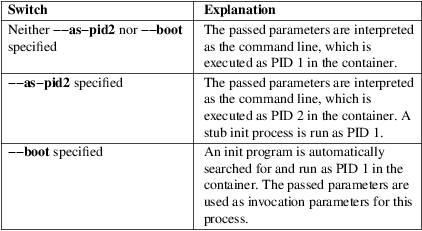

systemd-nspawn − Spawn a command or OS in a light−weight container
|
systemd−nspawn [OPTIONS...] [COMMAND [ARGS...]] |
||
|
systemd−nspawn −−boot [OPTIONS...] [ARGS...] |
systemd−nspawn may be used to run a command or OS in a light−weight namespace container. In many ways it is similar to chroot(1), but more powerful since it fully virtualizes the file system hierarchy, as well as the process tree, the various IPC subsystems and the host and domain name.
systemd−nspawn may be invoked on any directory tree containing an operating system tree, using the −−directory= command line option. By using the −−machine= option an OS tree is automatically searched for in a couple of locations, most importantly in /var/lib/machines/, the suggested directory to place OS container images installed on the system.
In contrast to chroot(1) systemd−nspawn may be used to boot full Linux−based operating systems in a container.
systemd−nspawn limits access to various kernel interfaces in the container to read−only, such as /sys/, /proc/sys/ or /sys/fs/selinux/. The host's network interfaces and the system clock may not be changed from within the container. Device nodes may not be created. The host system cannot be rebooted and kernel modules may not be loaded from within the container.
Use a tool like dnf(8), debootstrap(8), or pacman(8) to set up an OS directory tree suitable as file system hierarchy for systemd−nspawn containers. See the Examples section below for details on suitable invocation of these commands.
As a safety check systemd−nspawn will verify the existence of /usr/lib/os−release or /etc/os−release in the container tree before booting a container (see os-release(5)). It might be necessary to add this file to the container tree manually if the OS of the container is too old to contain this file out−of−the−box.
systemd−nspawn may be invoked directly from the interactive command line or run as system service in the background. In this mode each container instance runs as its own service instance; a default template unit file systemd−nspawn@.service is provided to make this easy, taking the container name as instance identifier. Note that different default options apply when systemd−nspawn is invoked by the template unit file than interactively on the command line. Most importantly the template unit file makes use of the −−boot option which is not the default in case systemd−nspawn is invoked from the interactive command line. Further differences with the defaults are documented along with the various supported options below.
The machinectl(1) tool may be used to execute a number of operations on containers. In particular it provides easy−to−use commands to run containers as system services using the systemd−nspawn@.service template unit file.
Along with each container a settings file with the .nspawn suffix may exist, containing additional settings to apply when running the container. See systemd.nspawn(5) for details. Settings files override the default options used by the systemd−nspawn@.service template unit file, making it usually unnecessary to alter this template file directly.
Note that systemd−nspawn will mount file systems private to the container to /dev/, /run/ and similar. These will not be visible outside of the container, and their contents will be lost when the container exits.
Note that running two systemd−nspawn containers from the same directory tree will not make processes in them see each other. The PID namespace separation of the two containers is complete and the containers will share very few runtime objects except for the underlying file system. Rather use machinectl(1)'s login or shell commands to request an additional login session in a running container.
systemd−nspawn implements the Container Interface [1] specification.
While running, containers invoked with systemd−nspawn are registered with the systemd-machined(8) service that keeps track of running containers, and provides programming interfaces to interact with them.
If option −−boot is specified, the arguments are used as arguments for the init program. Otherwise, COMMAND specifies the program to launch in the container, and the remaining arguments are used as arguments for this program. If −−boot is not used and no arguments are specified, a shell is launched in the container.
The following options are understood:
−q, −−quiet
Turns off any status output by the tool itself. When this switch is used, the only output from nspawn will be the console output of the container OS itself.
−−settings=MODE
Controls whether systemd−nspawn shall search for and use additional per−container settings from .nspawn files. Takes a boolean or the special values override or trusted.
If enabled (the default), a settings file named after the machine (as specified with the −−machine= setting, or derived from the directory or image file name) with the suffix .nspawn is searched in /etc/systemd/nspawn/ and /run/systemd/nspawn/. If it is found there, its settings are read and used. If it is not found there, it is subsequently searched in the same directory as the image file or in the immediate parent of the root directory of the container. In this case, if the file is found, its settings will be also read and used, but potentially unsafe settings are ignored. Note that in both these cases, settings on the command line take precedence over the corresponding settings from loaded .nspawn files, if both are specified. Unsafe settings are considered all settings that elevate the container's privileges or grant access to additional resources such as files or directories of the host. For details about the format and contents of .nspawn files, consult systemd.nspawn(5).
If this option is set to override, the file is searched, read and used the same way, however, the order of precedence is reversed: settings read from the .nspawn file will take precedence over the corresponding command line options, if both are specified.
If this option is set to trusted, the file is searched, read and used the same way, but regardless of being found in /etc/systemd/nspawn/, /run/systemd/nspawn/ or next to the image file or container root directory, all settings will take effect, however, command line arguments still take precedence over corresponding settings.
If disabled, no .nspawn file is read and no settings except the ones on the command line are in effect.
Image
Options
−D, −−directory=
Directory to use as file system root for the container.
If neither −−directory=, nor −−image= is specified the directory is determined by searching for a directory named the same as the machine name specified with −−machine=. See machinectl(1) section "Files and Directories" for the precise search path.
If neither −−directory=, −−image=, nor −−machine= are specified, the current directory will be used. May not be specified together with −−image=.
−−template=
Directory or "btrfs" subvolume to use as template for the container's root directory. If this is specified and the container's root directory (as configured by −−directory=) does not yet exist it is created as "btrfs" snapshot (if supported) or plain directory (otherwise) and populated from this template tree. Ideally, the specified template path refers to the root of a "btrfs" subvolume, in which case a simple copy−on−write snapshot is taken, and populating the root directory is instant. If the specified template path does not refer to the root of a "btrfs" subvolume (or not even to a "btrfs" file system at all), the tree is copied (though possibly in a 'reflink' copy−on−write scheme — if the file system supports that), which can be substantially more time−consuming. Note that the snapshot taken is of the specified directory or subvolume, including all subdirectories and subvolumes below it, but excluding any sub−mounts. May not be specified together with −−image= or −−ephemeral.
Note that this switch leaves hostname, machine ID and all other settings that could identify the instance unmodified.
−x, −−ephemeral
If specified, the container is run with a temporary snapshot of its file system that is removed immediately when the container terminates. May not be specified together with −−template=.
Note that this switch leaves hostname, machine ID and all other settings that could identify the instance unmodified. Please note that — as with −−template= — taking the temporary snapshot is more efficient on file systems that support subvolume snapshots or 'reflinks' natively ("btrfs" or new "xfs") than on more traditional file systems that do not ("ext4"). Note that the snapshot taken is of the specified directory or subvolume, including all subdirectories and subvolumes below it, but excluding any sub−mounts.
With this option no modifications of the container image are retained. Use −−volatile= (described below) for other mechanisms to restrict persistency of container images during runtime.
−i, −−image=
Disk image to mount the root directory for the container from. Takes a path to a regular file or to a block device node. The file or block device must contain either:
• An MBR partition table with a single partition of type 0x83 that is marked bootable.
• A GUID partition table (GPT) with a single partition of type 0fc63daf−8483−4772−8e79−3d69d8477de4.
• A GUID partition table (GPT) with a marked root partition which is mounted as the root directory of the container. Optionally, GPT images may contain a home and/or a server data partition which are mounted to the appropriate places in the container. All these partitions must be identified by the partition types defined by the Discoverable Partitions Specification [2] .
• No partition table, and a single file system spanning the whole image.
On GPT images, if an EFI System Partition (ESP) is discovered, it is automatically mounted to /efi (or /boot as fallback) in case a directory by this name exists and is empty.
Partitions encrypted with LUKS are automatically decrypted. Also, on GPT images dm−verity data integrity hash partitions are set up if the root hash for them is specified using the −−root−hash= option.
Single file system images (i.e. file systems without a surrounding partition table) can be opened using dm−verity if the integrity data is passed using the −−root−hash= and −−verity−data= (and optionally −−root−hash−sig=) options.
Any other partitions, such as foreign partitions or swap partitions are not mounted. May not be specified together with −−directory=, −−template=.
−−oci−bundle=
Takes the path to an OCI runtime bundle to invoke, as specified in the OCI Runtime Specification [3] . In this case no .nspawn file is loaded, and the root directory and various settings are read from the OCI runtime JSON data (but data passed on the command line takes precedence).
−−read−only
Mount the container's root file system (and any other file systems container in the container image) read−only. This has no effect on additional mounts made with −−bind=, −−tmpfs= and similar options. This mode is implied if the container image file or directory is marked read−only itself. It is also implied if −−volatile= is used. In this case the container image on disk is strictly read−only, while changes are permitted but kept non−persistently in memory only. For further details, see below.
−−volatile, −−volatile=MODE
Boots the container in volatile mode. When no mode parameter is passed or when mode is specified as yes, full volatile mode is enabled. This means the root directory is mounted as a mostly unpopulated "tmpfs" instance, and /usr/ from the OS tree is mounted into it in read−only mode (the system thus starts up with read−only OS image, but pristine state and configuration, any changes are lost on shutdown). When the mode parameter is specified as state, the OS tree is mounted read−only, but /var/ is mounted as a writable "tmpfs" instance into it (the system thus starts up with read−only OS resources and configuration, but pristine state, and any changes to the latter are lost on shutdown). When the mode parameter is specified as overlay the read−only root file system is combined with a writable tmpfs instance through "overlayfs", so that it appears at it normally would, but any changes are applied to the temporary file system only and lost when the container is terminated. When the mode parameter is specified as no (the default), the whole OS tree is made available writable (unless −−read−only is specified, see above).
Note that if one of the volatile modes is chosen, its effect is limited to the root file system (or /var/ in case of state), and any other mounts placed in the hierarchy are unaffected — regardless if they are established automatically (e.g. the EFI system partition that might be mounted to /efi/ or /boot/) or explicitly (e.g. through an additional command line option such as −−bind=, see below). This means, even if −−volatile=overlay is used changes to /efi/ or /boot/ are prohibited in case such a partition exists in the container image operated on, and even if −−volatile=state is used the hypothetical file /etc/foobar is potentially writable if −−bind=/etc/foobar if used to mount it from outside the read−only container /etc/ directory.
The −−ephemeral option is closely related to this setting, and provides similar behaviour by making a temporary, ephemeral copy of the whole OS image and executing that. For further details, see above.
The −−tmpfs= and −−overlay= options provide similar functionality, but for specific sub−directories of the OS image only. For details, see below.
This option provides similar functionality for containers as the "systemd.volatile=" kernel command line switch provides for host systems. See kernel-command-line(7) for details.
Note that setting this option to yes or state will only work correctly with operating systems in the container that can boot up with only /usr/ mounted, and are able to automatically populate /var/ (and /etc/ in case of "−−volatile=yes"). Specifically, this means that operating systems that follow the historic split of /bin/ and /lib/ (and related directories) from /usr/ (i.e. where the former are not symlinks into the latter) are not supported by "−−volatile=yes" as container payload. The overlay option does not require any particular preparations in the OS, but do note that "overlayfs" behaviour differs from regular file systems in a number of ways, and hence compatibility is limited.
−−root−hash=
Takes a data integrity (dm−verity) root hash specified in hexadecimal. This option enables data integrity checks using dm−verity, if the used image contains the appropriate integrity data (see above). The specified hash must match the root hash of integrity data, and is usually at least 256 bits (and hence 64 formatted hexadecimal characters) long (in case of SHA256 for example). If this option is not specified, but the image file carries the "user.verity.roothash" extended file attribute (see xattr(7)), then the root hash is read from it, also as formatted hexadecimal characters. If the extended file attribute is not found (or is not supported by the underlying file system), but a file with the .roothash suffix is found next to the image file, bearing otherwise the same name (except if the image has the .raw suffix, in which case the root hash file must not have it in its name), the root hash is read from it and automatically used, also as formatted hexadecimal characters.
Note that this configures the root hash for the root file system. Disk images may also contain separate file systems for the /usr/ hierarchy, which may be Verity protected as well. The root hash for this protection may be configured via the "user.verity.usrhash" extended file attribute or via a .usrhash file adjacent to the disk image, following the same format and logic as for the root hash for the root file system described here. Note that there's currently no switch to configure the root hash for the /usr/ from the command line.
Also see the RootHash= option in systemd.exec(5).
−−root−hash−sig=
Takes a PKCS7 signature of the −−root−hash= option. The semantics are the same as for the RootHashSignature= option, see systemd.exec(5).
−−verity−data=
Takes the path to a data integrity (dm−verity) file. This option enables data integrity checks using dm−verity, if a root−hash is passed and if the used image itself does not contain the integrity data. The integrity data must be matched by the root hash. If this option is not specified, but a file with the .verity suffix is found next to the image file, bearing otherwise the same name (except if the image has the .raw suffix, in which case the verity data file must not have it in its name), the verity data is read from it and automatically used.
−−pivot−root=
Pivot the specified directory to / inside the container, and either unmount the container's old root, or pivot it to another specified directory. Takes one of: a path argument — in which case the specified path will be pivoted to / and the old root will be unmounted; or a colon−separated pair of new root path and pivot destination for the old root. The new root path will be pivoted to /, and the old / will be pivoted to the other directory. Both paths must be absolute, and are resolved in the container's file system namespace.
This is for containers which have several bootable directories in them; for example, several OSTree [4] deployments. It emulates the behavior of the boot loader and the initrd which normally select which directory to mount as the root and start the container's PID 1 in.
Execution
Options
−a, −−as−pid2
Invoke the shell or specified program as process ID (PID) 2 instead of PID 1 (init). By default, if neither this option nor −−boot is used, the selected program is run as the process with PID 1, a mode only suitable for programs that are aware of the special semantics that the process with PID 1 has on UNIX. For example, it needs to reap all processes reparented to it, and should implement sysvinit compatible signal handling (specifically: it needs to reboot on SIGINT, reexecute on SIGTERM, reload configuration on SIGHUP, and so on). With −−as−pid2 a minimal stub init process is run as PID 1 and the selected program is executed as PID 2 (and hence does not need to implement any special semantics). The stub init process will reap processes as necessary and react appropriately to signals. It is recommended to use this mode to invoke arbitrary commands in containers, unless they have been modified to run correctly as PID 1. Or in other words: this switch should be used for pretty much all commands, except when the command refers to an init or shell implementation, as these are generally capable of running correctly as PID 1. This option may not be combined with −−boot.
−b, −−boot
Automatically search for an init program and invoke it as PID 1, instead of a shell or a user supplied program. If this option is used, arguments specified on the command line are used as arguments for the init program. This option may not be combined with −−as−pid2.
The following table explains the different modes of invocation and relationship to −−as−pid2 (see above):
Table 1. Invocation Mode

Note that −−boot is the default mode of operation if the systemd−nspawn@.service template unit file is used.
−−chdir=
Change to the specified working directory before invoking the process in the container. Expects an absolute path in the container's file system namespace.
−E NAME[=VALUE], −−setenv=NAME[=VALUE]
Specifies an environment variable to pass to the init process in the container. This may be used to override the default variables or to set additional variables. It may be used more than once to set multiple variables. When "=" and VALUE are omitted, the value of the variable with the same name in the program environment will be used.
−u, −−user=
After transitioning into the container, change to the specified user defined in the container's user database. Like all other systemd−nspawn features, this is not a security feature and provides protection against accidental destructive operations only.
−−kill−signal=
Specify the process signal to send to the container's PID 1 when nspawn itself receives SIGTERM, in order to trigger an orderly shutdown of the container. Defaults to SIGRTMIN+3 if −−boot is used (on systemd−compatible init systems SIGRTMIN+3 triggers an orderly shutdown). If −−boot is not used and this option is not specified the container's processes are terminated abruptly via SIGKILL. For a list of valid signals, see signal(7).
−−notify−ready=
Configures support for notifications from the container's init process. −−notify−ready= takes a boolean (no and yes). With option no systemd−nspawn notifies systemd with a "READY=1" message when the init process is created. With option yes systemd−nspawn waits for the "READY=1" message from the init process in the container before sending its own to systemd. For more details about notifications see sd_notify(3).
−−suppress−sync=
Expects a boolean argument. If true, turns off any form of on−disk file system synchronization for the container payload. This means all system calls such as sync(2), fsync(), syncfs(), ... will execute no operation, and the O_SYNC/O_DSYNC flags to open(2) and related calls will be made unavailable. This is potentially dangerous, as assumed data integrity guarantees to the container payload are not actually enforced (i.e. data assumed to have been written to disk might be lost if the system is shut down abnormally). However, this can dramatically improve container runtime performance – as long as these guarantees are not required or desirable, for example because any data written by the container is of temporary, redundant nature, or just an intermediary artifact that will be further processed and finalized by a later step in a pipeline. Defaults to false.
System
Identity Options
−M, −−machine=
Sets the machine name for this container. This name may be used to identify this container during its runtime (for example in tools like machinectl(1) and similar), and is used to initialize the container's hostname (which the container can choose to override, however). If not specified, the last component of the root directory path of the container is used, possibly suffixed with a random identifier in case −−ephemeral mode is selected. If the root directory selected is the host's root directory the host's hostname is used as default instead.
−−hostname=
Controls the hostname to set within the container, if different from the machine name. Expects a valid hostname as argument. If this option is used, the kernel hostname of the container will be set to this value, otherwise it will be initialized to the machine name as controlled by the −−machine= option described above. The machine name is used for various aspect of identification of the container from the outside, the kernel hostname configurable with this option is useful for the container to identify itself from the inside. It is usually a good idea to keep both forms of identification synchronized, in order to avoid confusion. It is hence recommended to avoid usage of this option, and use −−machine= exclusively. Note that regardless whether the container's hostname is initialized from the name set with −−hostname= or the one set with −−machine=, the container can later override its kernel hostname freely on its own as well.
−−uuid=
Set the specified UUID for the container. The init system will initialize /etc/machine−id from this if this file is not set yet. Note that this option takes effect only if /etc/machine−id in the container is unpopulated.
Property
Options
−S, −−slice=
Make the container part of the specified slice, instead of the default machine.slice. This applies only if the machine is run in its own scope unit, i.e. if −−keep−unit isn't used.
−−property=
Set a unit property on the scope unit to register for the machine. This applies only if the machine is run in its own scope unit, i.e. if −−keep−unit isn't used. Takes unit property assignments in the same format as systemctl set−property. This is useful to set memory limits and similar for the container.
−−register=
Controls whether the container is registered with systemd-machined(8). Takes a boolean argument, which defaults to "yes". This option should be enabled when the container runs a full Operating System (more specifically: a system and service manager as PID 1), and is useful to ensure that the container is accessible via machinectl(1) and shown by tools such as ps(1). If the container does not run a service manager, it is recommended to set this option to "no".
−−keep−unit
Instead of creating a transient scope unit to run the container in, simply use the service or scope unit systemd−nspawn has been invoked in. If −−register=yes is set this unit is registered with systemd-machined(8). This switch should be used if systemd−nspawn is invoked from within a service unit, and the service unit's sole purpose is to run a single systemd−nspawn container. This option is not available if run from a user session.
Note that passing −−keep−unit disables the effect of −−slice= and −−property=. Use −−keep−unit and −−register=no in combination to disable any kind of unit allocation or registration with systemd−machined.
User
Namespacing Options
−−private−users=
Controls user namespacing. If enabled, the container will run with its own private set of UNIX user and group ids (UIDs and GIDs). This involves mapping the private UIDs/GIDs used in the container (starting with the container's root user 0 and up) to a range of UIDs/GIDs on the host that are not used for other purposes (usually in the range beyond the host's UID/GID 65536). The parameter may be specified as follows:
1. If one or two colon−separated numbers are specified, user namespacing is turned on. The first parameter specifies the first host UID/GID to assign to the container, the second parameter specifies the number of host UIDs/GIDs to assign to the container. If the second parameter is omitted, 65536 UIDs/GIDs are assigned.
2. If the parameter is "yes", user namespacing is turned on. The UID/GID range to use is determined automatically from the file ownership of the root directory of the container's directory tree. To use this option, make sure to prepare the directory tree in advance, and ensure that all files and directories in it are owned by UIDs/GIDs in the range you'd like to use. Also, make sure that used file ACLs exclusively reference UIDs/GIDs in the appropriate range. In this mode, the number of UIDs/GIDs assigned to the container is 65536, and the owner UID/GID of the root directory must be a multiple of 65536.
3. If the parameter is "no", user namespacing is turned off. This is the default.
4. If the parameter is "identity", user namespacing is employed with an identity mapping for the first 65536 UIDs/GIDs. This is mostly equivalent to −−private−users=0:65536. While it does not provide UID/GID isolation, since all host and container UIDs/GIDs are chosen identically it does provide process capability isolation, and hence is often a good choice if proper user namespacing with distinct UID maps is not appropriate.
5. The special value "pick" turns on user namespacing. In this case the UID/GID range is automatically chosen. As first step, the file owner UID/GID of the root directory of the container's directory tree is read, and it is checked that no other container is currently using it. If this check is successful, the UID/GID range determined this way is used, similarly to the behavior if "yes" is specified. If the check is not successful (and thus the UID/GID range indicated in the root directory's file owner is already used elsewhere) a new – currently unused – UID/GID range of 65536 UIDs/GIDs is randomly chosen between the host UID/GIDs of 524288 and 1878982656, always starting at a multiple of 65536, and, if possible, consistently hashed from the machine name. This setting implies −−private−users−ownership=auto (see below), which possibly has the effect that the files and directories in the container's directory tree will be owned by the appropriate users of the range picked. Using this option makes user namespace behavior fully automatic. Note that the first invocation of a previously unused container image might result in picking a new UID/GID range for it, and thus in the (possibly expensive) file ownership adjustment operation. However, subsequent invocations of the container will be cheap (unless of course the picked UID/GID range is assigned to a different use by then).
It is recommended to assign at least 65536 UIDs/GIDs to each container, so that the usable UID/GID range in the container covers 16 bit. For best security, do not assign overlapping UID/GID ranges to multiple containers. It is hence a good idea to use the upper 16 bit of the host 32−bit UIDs/GIDs as container identifier, while the lower 16 bit encode the container UID/GID used. This is in fact the behavior enforced by the −−private−users=pick option.
When user namespaces are used, the GID range assigned to each container is always chosen identical to the UID range.
In most cases, using −−private−users=pick is the recommended option as it enhances container security massively and operates fully automatically in most cases.
Note that the picked UID/GID range is not written to /etc/passwd or /etc/group. In fact, the allocation of the range is not stored persistently anywhere, except in the file ownership of the files and directories of the container.
Note that when user namespacing is used file ownership on disk reflects this, and all of the container's files and directories are owned by the container's effective user and group IDs. This means that copying files from and to the container image requires correction of the numeric UID/GID values, according to the UID/GID shift applied.
−−private−users−ownership=
Controls how to adjust the container image's UIDs and GIDs to match the UID/GID range chosen with −−private−users=, see above. Takes one of "off" (to leave the image as is), "chown" (to recursively chown() the container's directory tree as needed), "map" (in order to use transparent ID mapping mounts) or "auto" for automatically using "map" where available and "chown" where not.
If "chown" is selected, all files and directories in the container's directory tree will be adjusted so that they are owned by the appropriate UIDs/GIDs selected for the container (see above). This operation is potentially expensive, as it involves iterating through the full directory tree of the container. Besides actual file ownership, file ACLs are adjusted as well.
Typically "map" is the best choice, since it transparently maps UIDs/GIDs in memory as needed without modifying the image, and without requiring an expensive recursive adjustment operation. However, it is not available for all file systems, currently.
The −−private−users−ownership=auto option is implied if −−private−users=pick is used. This option has no effect if user namespacing is not used.
−U
If the kernel supports the user namespaces feature, equivalent to −−private−users=pick −−private−users−ownership=auto, otherwise equivalent to −−private−users=no.
Note that −U is the default if the systemd−nspawn@.service template unit file is used.
Note: it is possible to undo the effect of −−private−users−ownership=chown (or −U) on the file system by redoing the operation with the first UID of 0:
systemd−nspawn ... −−private−users=0 −−private−users−ownership=chown
Networking
Options
−−private−network
Disconnect networking of the container from the host. This makes all network interfaces unavailable in the container, with the exception of the loopback device and those specified with −−network−interface= and configured with −−network−veth. If this option is specified, the CAP_NET_ADMIN capability will be added to the set of capabilities the container retains. The latter may be disabled by using −−drop−capability=. If this option is not specified (or implied by one of the options listed below), the container will have full access to the host network.
−−network−interface=
Assign the specified network interface to the container. This will remove the specified interface from the calling namespace and place it in the container. When the container terminates, it is moved back to the calling namespace. Note that −−network−interface= implies −−private−network. This option may be used more than once to add multiple network interfaces to the container.
Note that any network interface specified this way must already exist at the time the container is started. If the container shall be started automatically at boot via a systemd−nspawn@.service unit file instance, it might hence make sense to add a unit file drop−in to the service instance (e.g. /etc/systemd/system/systemd−nspawn@foobar.service.d/50−network.conf) with contents like the following:
[Unit]
Wants=sys−subsystem−net−devices−ens1.device
After=sys−subsystem−net−devices−ens1.device
This will make sure that activation of the container service will be delayed until the "ens1" network interface has shown up. This is required since hardware probing is fully asynchronous, and network interfaces might be discovered only later during the boot process, after the container would normally be started without these explicit dependencies.
−−network−macvlan=
Create a "macvlan" interface of the specified Ethernet network interface and add it to the container. A "macvlan" interface is a virtual interface that adds a second MAC address to an existing physical Ethernet link. The interface in the container will be named after the interface on the host, prefixed with "mv−". Note that −−network−macvlan= implies −−private−network. This option may be used more than once to add multiple network interfaces to the container.
As with −−network−interface=, the underlying Ethernet network interface must already exist at the time the container is started, and thus similar unit file drop−ins as described above might be useful.
−−network−ipvlan=
Create an "ipvlan" interface of the specified Ethernet network interface and add it to the container. An "ipvlan" interface is a virtual interface, similar to a "macvlan" interface, which uses the same MAC address as the underlying interface. The interface in the container will be named after the interface on the host, prefixed with "iv−". Note that −−network−ipvlan= implies −−private−network. This option may be used more than once to add multiple network interfaces to the container.
As with −−network−interface=, the underlying Ethernet network interface must already exist at the time the container is started, and thus similar unit file drop−ins as described above might be useful.
−n, −−network−veth
Create a virtual Ethernet link ("veth") between host and container. The host side of the Ethernet link will be available as a network interface named after the container's name (as specified with −−machine=), prefixed with "ve−". The container side of the Ethernet link will be named "host0". The −−network−veth option implies −−private−network.
Note that systemd-networkd.service(8) includes by default a network file /usr/lib/systemd/network/80−container−ve.network matching the host−side interfaces created this way, which contains settings to enable automatic address provisioning on the created virtual link via DHCP, as well as automatic IP routing onto the host's external network interfaces. It also contains /usr/lib/systemd/network/80−container−host0.network matching the container−side interface created this way, containing settings to enable client side address assignment via DHCP. In case systemd−networkd is running on both the host and inside the container, automatic IP communication from the container to the host is thus available, with further connectivity to the external network.
Note that −−network−veth is the default if the systemd−nspawn@.service template unit file is used.
Note that on Linux network interface names may have a length of 15 characters at maximum, while container names may have a length up to 64 characters. As this option derives the host−side interface name from the container name the name is possibly truncated. Thus, care needs to be taken to ensure that interface names remain unique in this case, or even better container names are generally not chosen longer than 12 characters, to avoid the truncation. If the name is truncated, systemd−nspawn will automatically append a 4−digit hash value to the name to reduce the chance of collisions. However, the hash algorithm is not collision−free. (See systemd.net-naming-scheme(7) for details on older naming algorithms for this interface). Alternatively, the −−network−veth−extra= option may be used, which allows free configuration of the host−side interface name independently of the container name — but might require a bit more additional configuration in case bridging in a fashion similar to −−network−bridge= is desired.
−−network−veth−extra=
Adds an additional virtual Ethernet link between host and container. Takes a colon−separated pair of host interface name and container interface name. The latter may be omitted in which case the container and host sides will be assigned the same name. This switch is independent of −−network−veth, and — in contrast — may be used multiple times, and allows configuration of the network interface names. Note that −−network−bridge= has no effect on interfaces created with −−network−veth−extra=.
−−network−bridge=
Adds the host side of the Ethernet link created with −−network−veth to the specified Ethernet bridge interface. Expects a valid network interface name of a bridge device as argument. Note that −−network−bridge= implies −−network−veth. If this option is used, the host side of the Ethernet link will use the "vb−" prefix instead of "ve−". Regardless of the used naming prefix the same network interface name length limits imposed by Linux apply, along with the complications this creates (for details see above).
As with −−network−interface=, the underlying bridge network interface must already exist at the time the container is started, and thus similar unit file drop−ins as described above might be useful.
−−network−zone=
Creates a virtual Ethernet link ("veth") to the container and adds it to an automatically managed Ethernet bridge interface. The bridge interface is named after the passed argument, prefixed with "vz−". The bridge interface is automatically created when the first container configured for its name is started, and is automatically removed when the last container configured for its name exits. Hence, each bridge interface configured this way exists only as long as there's at least one container referencing it running. This option is very similar to −−network−bridge=, besides this automatic creation/removal of the bridge device.
This setting makes it easy to place multiple related containers on a common, virtual Ethernet−based broadcast domain, here called a "zone". Each container may only be part of one zone, but each zone may contain any number of containers. Each zone is referenced by its name. Names may be chosen freely (as long as they form valid network interface names when prefixed with "vz−"), and it is sufficient to pass the same name to the −−network−zone= switch of the various concurrently running containers to join them in one zone.
Note that systemd-networkd.service(8) includes by default a network file /usr/lib/systemd/network/80−container−vz.network matching the bridge interfaces created this way, which contains settings to enable automatic address provisioning on the created virtual network via DHCP, as well as automatic IP routing onto the host's external network interfaces. Using −−network−zone= is hence in most cases fully automatic and sufficient to connect multiple local containers in a joined broadcast domain to the host, with further connectivity to the external network.
−−network−namespace−path=
Takes the path to a file representing a kernel network namespace that the container shall run in. The specified path should refer to a (possibly bind−mounted) network namespace file, as exposed by the kernel below /proc/$PID/ns/net. This makes the container enter the given network namespace. One of the typical use cases is to give a network namespace under /run/netns created by ip-netns(8), for example, −−network−namespace−path=/run/netns/foo. Note that this option cannot be used together with other network−related options, such as −−private−network or −−network−interface=.
−p, −−port=
If private networking is enabled, maps an IP port on the host onto an IP port on the container. Takes a protocol specifier (either "tcp" or "udp"), separated by a colon from a host port number in the range 1 to 65535, separated by a colon from a container port number in the range from 1 to 65535. The protocol specifier and its separating colon may be omitted, in which case "tcp" is assumed. The container port number and its colon may be omitted, in which case the same port as the host port is implied. This option is only supported if private networking is used, such as with −−network−veth, −−network−zone= −−network−bridge=.
Security
Options
−−capability=
List one or more additional capabilities to grant the container. Takes a comma−separated list of capability names, see capabilities(7) for more information. Note that the following capabilities will be granted in any way: CAP_AUDIT_CONTROL, CAP_AUDIT_WRITE, CAP_CHOWN, CAP_DAC_OVERRIDE, CAP_DAC_READ_SEARCH, CAP_FOWNER, CAP_FSETID, CAP_IPC_OWNER, CAP_KILL, CAP_LEASE, CAP_LINUX_IMMUTABLE, CAP_MKNOD, CAP_NET_BIND_SERVICE, CAP_NET_BROADCAST, CAP_NET_RAW, CAP_SETFCAP, CAP_SETGID, CAP_SETPCAP, CAP_SETUID, CAP_SYS_ADMIN, CAP_SYS_BOOT, CAP_SYS_CHROOT, CAP_SYS_NICE, CAP_SYS_PTRACE, CAP_SYS_RESOURCE, CAP_SYS_TTY_CONFIG. Also CAP_NET_ADMIN is retained if −−private−network is specified. If the special value "all" is passed, all capabilities are retained.
If the special value of "help" is passed, the program will print known capability names and exit.
This option sets the bounding set of capabilities which also limits the ambient capabilities as given with the −−ambient−capability=.
−−drop−capability=
Specify one or more additional capabilities to drop for the container. This allows running the container with fewer capabilities than the default (see above).
If the special value of "help" is passed, the program will print known capability names and exit.
This option sets the bounding set of capabilities which also limits the ambient capabilities as given with the −−ambient−capability=.
−−ambient−capability=
Specify one or more additional capabilities to pass in the inheritable and ambient set to the program started within the container. The value "all" is not supported for this setting.
All capabilities specified here must be in the set allowed with the −−capability= and −−drop−capability= options. Otherwise, an error message will be shown.
This option cannot be combined with the boot mode of the container (as requested via −−boot).
If the special value of "help" is passed, the program will print known capability names and exit.
−−no−new−privileges=
Takes a boolean argument. Specifies the value of the PR_SET_NO_NEW_PRIVS flag for the container payload. Defaults to off. When turned on the payload code of the container cannot acquire new privileges, i.e. the "setuid" file bit as well as file system capabilities will not have an effect anymore. See prctl(2) for details about this flag.
−−system−call−filter=
Alter the system call filter applied to containers. Takes a space−separated list of system call names or group names (the latter prefixed with "@", as listed by the syscall−filter command of systemd-analyze(1)). Passed system calls will be permitted. The list may optionally be prefixed by "~", in which case all listed system calls are prohibited. If this command line option is used multiple times the configured lists are combined. If both a positive and a negative list (that is one system call list without and one with the "~" prefix) are configured, the negative list takes precedence over the positive list. Note that systemd−nspawn always implements a system call allow list (as opposed to a deny list!), and this command line option hence adds or removes entries from the default allow list, depending on the "~" prefix. Note that the applied system call filter is also altered implicitly if additional capabilities are passed using the −−capabilities=.
−Z, −−selinux−context=
Sets the SELinux security context to be used to label processes in the container.
−L, −−selinux−apifs−context=
Sets the SELinux security context to be used to label files in the virtual API file systems in the container.
Resource
Options
−−rlimit=
Sets the specified POSIX resource limit for the container payload. Expects an assignment of the form "LIMIT=SOFT:HARD" or "LIMIT=VALUE", where LIMIT should refer to a resource limit type, such as RLIMIT_NOFILE or RLIMIT_NICE. The SOFT and HARD fields should refer to the numeric soft and hard resource limit values. If the second form is used, VALUE may specify a value that is used both as soft and hard limit. In place of a numeric value the special string "infinity" may be used to turn off resource limiting for the specific type of resource. This command line option may be used multiple times to control limits on multiple limit types. If used multiple times for the same limit type, the last use wins. For details about resource limits see setrlimit(2). By default resource limits for the container's init process (PID 1) are set to the same values the Linux kernel originally passed to the host init system. Note that some resource limits are enforced on resources counted per user, in particular RLIMIT_NPROC. This means that unless user namespacing is deployed (i.e. −−private−users= is used, see above), any limits set will be applied to the resource usage of the same user on all local containers as well as the host. This means particular care needs to be taken with these limits as they might be triggered by possibly less trusted code. Example: "−−rlimit=RLIMIT_NOFILE=8192:16384".
−−oom−score−adjust=
Changes the OOM ("Out Of Memory") score adjustment value for the container payload. This controls /proc/self/oom_score_adj which influences the preference with which this container is terminated when memory becomes scarce. For details see proc(5). Takes an integer in the range −1000...1000.
−−cpu−affinity=
Controls the CPU affinity of the container payload. Takes a comma separated list of CPU numbers or number ranges (the latter's start and end value separated by dashes). See sched_setaffinity(2) for details.
−−personality=
Control the architecture ("personality") reported by uname(2) in the container. Currently, only "x86" and "x86−64" are supported. This is useful when running a 32−bit container on a 64−bit host. If this setting is not used, the personality reported in the container is the same as the one reported on the host.
Integration
Options
−−resolv−conf=
Configures how /etc/resolv.conf inside of the container shall be handled (i.e. DNS configuration synchronization from host to container). Takes one of "off", "copy−host", "copy−static", "copy−uplink", "copy−stub", "replace−host", "replace−static", "replace−uplink", "replace−stub", "bind−host", "bind−static", "bind−uplink", "bind−stub", "delete" or "auto".
If set to "off" the /etc/resolv.conf file in the container is left as it is included in the image, and neither modified nor bind mounted over.
If set to "copy−host", the /etc/resolv.conf file from the host is copied into the container, unless the file exists already and is not a regular file (e.g. a symlink). Similarly, if "replace−host" is used the file is copied, replacing any existing inode, including symlinks. Similarly, if "bind−host" is used, the file is bind mounted from the host into the container.
If set to "copy−static", "replace−static" or "bind−static" the static resolv.conf file supplied with systemd-resolved.service(8) (specifically: /usr/lib/systemd/resolv.conf) is copied or bind mounted into the container.
If set to "copy−uplink", "replace−uplink" or "bind−uplink" the uplink resolv.conf file managed by systemd−resolved.service (specifically: /run/systemd/resolve/resolv.conf) is copied or bind mounted into the container.
If set to "copy−stub", "replace−stub" or "bind−stub" the stub resolv.conf file managed by systemd−resolved.service (specifically: /run/systemd/resolve/stub−resolv.conf) is copied or bind mounted into the container.
If set to "delete" the /etc/resolv.conf file in the container is deleted if it exists.
Finally, if set to "auto" the file is left as it is if private networking is turned on (see −−private−network). Otherwise, if systemd−resolved.service is running its stub resolv.conf file is used, and if not the host's /etc/resolv.conf file. In the latter cases the file is copied if the image is writable, and bind mounted otherwise.
It's recommended to use "copy−..." or "replace−..." if the container shall be able to make changes to the DNS configuration on its own, deviating from the host's settings. Otherwise "bind" is preferable, as it means direct changes to /etc/resolv.conf in the container are not allowed, as it is a read−only bind mount (but note that if the container has enough privileges, it might simply go ahead and unmount the bind mount anyway). Note that both if the file is bind mounted and if it is copied no further propagation of configuration is generally done after the one−time early initialization (this is because the file is usually updated through copying and renaming). Defaults to "auto".
−−timezone=
Configures how /etc/localtime inside of the container (i.e. local timezone synchronization from host to container) shall be handled. Takes one of "off", "copy", "bind", "symlink", "delete" or "auto". If set to "off" the /etc/localtime file in the container is left as it is included in the image, and neither modified nor bind mounted over. If set to "copy" the /etc/localtime file of the host is copied into the container. Similarly, if "bind" is used, the file is bind mounted from the host into the container. If set to "symlink", a symlink is created pointing from /etc/localtime in the container to the timezone file in the container that matches the timezone setting on the host. If set to "delete", the file in the container is deleted, should it exist. If set to "auto" and the /etc/localtime file of the host is a symlink, then "symlink" mode is used, and "copy" otherwise, except if the image is read−only in which case "bind" is used instead. Defaults to "auto".
−−link−journal=
Control whether the container's journal shall be made visible to the host system. If enabled, allows viewing the container's journal files from the host (but not vice versa). Takes one of "no", "host", "try−host", "guest", "try−guest", "auto". If "no", the journal is not linked. If "host", the journal files are stored on the host file system (beneath /var/log/journal/machine−id) and the subdirectory is bind−mounted into the container at the same location. If "guest", the journal files are stored on the guest file system (beneath /var/log/journal/machine−id) and the subdirectory is symlinked into the host at the same location. "try−host" and "try−guest" do the same but do not fail if the host does not have persistent journaling enabled. If "auto" (the default), and the right subdirectory of /var/log/journal exists, it will be bind mounted into the container. If the subdirectory does not exist, no linking is performed. Effectively, booting a container once with "guest" or "host" will link the journal persistently if further on the default of "auto" is used.
Note that −−link−journal=try−guest is the default if the systemd−nspawn@.service template unit file is used.
−j
Equivalent to −−link−journal=try−guest.
Mount
Options
−−bind=,
−−bind−ro=
Bind mount a file or directory from the host into the container. Takes one of: a path argument — in which case the specified path will be mounted from the host to the same path in the container, or a colon−separated pair of paths — in which case the first specified path is the source in the host, and the second path is the destination in the container, or a colon−separated triple of source path, destination path and mount options. The source path may optionally be prefixed with a "+" character. If so, the source path is taken relative to the image's root directory. This permits setting up bind mounts within the container image. The source path may be specified as empty string, in which case a temporary directory below the host's /var/tmp/ directory is used. It is automatically removed when the container is shut down. If the source path is not absolute, it is resolved relative to the current working directory. The −−bind−ro= option creates read−only bind mounts. Backslash escapes are interpreted, so "\:" may be used to embed colons in either path. This option may be specified multiple times for creating multiple independent bind mount points.
Mount options are comma−separated. rbind and norbind control whether to create a recursive or a regular bind mount. Defaults to "rbind". noidmap, idmap, and rootidmap control ID mapping.
Using idmap or rootidmap requires support by the source filesystem for user/group ID mapped mounts. Defaults to "noidmap". With x being the container's UID range offset, y being the length of the container's UID range, and p being the owner UID of the bind mount source inode on the host:
• If noidmap is used, any user z in the range 0 ... y seen from inside of the container is mapped to x + z in the x ... x + y range on the host. Other host users are mapped to nobody inside the container.
• If idmap is used, any user z in the UID range 0 ... y as seen from inside the container is mapped to the same z in the same 0 ... y range on the host. All host users outside of that range are mapped to nobody inside the container.
• If rootidmap is used, the user 0 seen from inside of the container is mapped to p on the host. All host users outside of that range are mapped to nobody inside the container.
Whichever ID mapping option is used, the same mapping will be used for users and groups IDs. If rootidmap is used, the group owning the bind mounted directory will have no effect.
Note that when this option is used in combination with −−private−users, the resulting mount points will be owned by the nobody user. That's because the mount and its files and directories continue to be owned by the relevant host users and groups, which do not exist in the container, and thus show up under the wildcard UID 65534 (nobody). If such bind mounts are created, it is recommended to make them read−only, using −−bind−ro=. Alternatively you can use the "idmap" mount option to map the filesystem IDs.
−−bind−user=
Binds the home directory of the specified user on the host into the container. Takes the name of an existing user on the host as argument. May be used multiple times to bind multiple users into the container. This does three things:
1. The user's home directory is bind mounted from the host into /run/host/home/.
2. An additional UID/GID mapping is added that maps the host user's UID/GID to a container UID/GID, allocated from the 60514...60577 range.
3. A JSON user and group record is generated in /run/userdb/ that describes the mapped user. It contains a minimized representation of the host's user record, adjusted to the UID/GID and home directory path assigned to the user in the container. The nss-systemd(8) glibc NSS module will pick up these records from there and make them available in the container's user/group databases.
The combination of the three operations above ensures that it is possible to log into the container using the same account information as on the host. The user is only mapped transiently, while the container is running, and the mapping itself does not result in persistent changes to the container (except maybe for log messages generated at login time, and similar). Note that in particular the UID/GID assignment in the container is not made persistently. If the user is mapped transiently, it is best to not allow the user to make persistent changes to the container. If the user leaves files or directories owned by the user, and those UIDs/GIDs are reused during later container invocations (possibly with a different −−bind−user= mapping), those files and directories will be accessible to the "new" user.
The user/group record mapping only works if the container contains systemd 249 or newer, with nss−systemd properly configured in nsswitch.conf. See nss-systemd(8) for details.
Note that the user record propagated from the host into the container will contain the UNIX password hash of the user, so that seamless logins in the container are possible. If the container is less trusted than the host it's hence important to use a strong UNIX password hash function (e.g. yescrypt or similar, with the "$y$" hash prefix).
When binding a user from the host into the container checks are executed to ensure that the username is not yet known in the container. Moreover, it is checked that the UID/GID allocated for it is not currently defined in the user/group databases of the container. Both checks directly access the container's /etc/passwd and /etc/group, and thus might not detect existing accounts in other databases.
This operation is only supported in combination with −−private−users=/−U.
−−inaccessible=
Make the specified path inaccessible in the container. This over−mounts the specified path (which must exist in the container) with a file node of the same type that is empty and has the most restrictive access mode supported. This is an effective way to mask files, directories and other file system objects from the container payload. This option may be used more than once in case all specified paths are masked.
−−tmpfs=
Mount a tmpfs file system into the container. Takes a single absolute path argument that specifies where to mount the tmpfs instance to (in which case the directory access mode will be chosen as 0755, owned by root/root), or optionally a colon−separated pair of path and mount option string that is used for mounting (in which case the kernel default for access mode and owner will be chosen, unless otherwise specified). Backslash escapes are interpreted in the path, so "\:" may be used to embed colons in the path.
Note that this option cannot be used to replace the root file system of the container with a temporary file system. However, the −−volatile= option described below provides similar functionality, with a focus on implementing stateless operating system images.
−−overlay=, −−overlay−ro=
Combine multiple directory trees into one overlay file system and mount it into the container. Takes a list of colon−separated paths to the directory trees to combine and the destination mount point.
Backslash escapes are interpreted in the paths, so "\:" may be used to embed colons in the paths.
If three or more paths are specified, then the last specified path is the destination mount point in the container, all paths specified before refer to directory trees on the host and are combined in the specified order into one overlay file system. The left−most path is hence the lowest directory tree, the second−to−last path the highest directory tree in the stacking order. If −−overlay−ro= is used instead of −−overlay=, a read−only overlay file system is created. If a writable overlay file system is created, all changes made to it are written to the highest directory tree in the stacking order, i.e. the second−to−last specified.
If only two paths are specified, then the second specified path is used both as the top−level directory tree in the stacking order as seen from the host, as well as the mount point for the overlay file system in the container. At least two paths have to be specified.
The source paths may optionally be prefixed with "+" character. If so they are taken relative to the image's root directory. The uppermost source path may also be specified as an empty string, in which case a temporary directory below the host's /var/tmp/ is used. The directory is removed automatically when the container is shut down. This behaviour is useful in order to make read−only container directories writable while the container is running. For example, use "−−overlay=+/var::/var" in order to automatically overlay a writable temporary directory on a read−only /var/ directory. If a source path is not absolute, it is resolved relative to the current working directory.
For details about overlay file systems, see Overlay Filesystem [5] . Note that the semantics of overlay file systems are substantially different from normal file systems, in particular regarding reported device and inode information. Device and inode information may change for a file while it is being written to, and processes might see out−of−date versions of files at times. Note that this switch automatically derives the "workdir=" mount option for the overlay file system from the top−level directory tree, making it a sibling of it. It is hence essential that the top−level directory tree is not a mount point itself (since the working directory must be on the same file system as the top−most directory tree). Also note that the "lowerdir=" mount option receives the paths to stack in the opposite order of this switch.
Note that this option cannot be used to replace the root file system of the container with an overlay file system. However, the −−volatile= option described above provides similar functionality, with a focus on implementing stateless operating system images.
Input/Output
Options
−−console=MODE
Configures how to set up standard input, output and error output for the container payload, as well as the /dev/console device for the container. Takes one of interactive, read−only, passive, pipe or autopipe. If interactive, a pseudo−TTY is allocated and made available as /dev/console in the container. It is then bi−directionally connected to the standard input and output passed to systemd−nspawn. read−only is similar but only the output of the container is propagated and no input from the caller is read. If passive, a pseudo TTY is allocated, but it is not connected anywhere. In pipe mode no pseudo TTY is allocated, but the standard input, output and error output file descriptors passed to systemd−nspawn are passed on — as they are — to the container payload, see the following paragraph. Finally, autopipe mode operates like interactive when systemd−nspawn is invoked on a terminal, and like pipe otherwise. Defaults to interactive if systemd−nspawn is invoked from a terminal, and read−only otherwise.
In pipe mode, /dev/console will not exist in the container. This means that the container payload generally cannot be a full init system as init systems tend to require /dev/console to be available. On the other hand, in this mode container invocations can be used within shell pipelines. This is because intermediary pseudo TTYs do not permit independent bidirectional propagation of the end−of−file (EOF) condition, which is necessary for shell pipelines to work correctly. Note that the pipe mode should be used carefully, as passing arbitrary file descriptors to less trusted container payloads might open up unwanted interfaces for access by the container payload. For example, if a passed file descriptor refers to a TTY of some form, APIs such as TIOCSTI may be used to synthesize input that might be used for escaping the container. Hence pipe mode should only be used if the payload is sufficiently trusted or when the standard input/output/error output file descriptors are known safe, for example pipes.
−−pipe, −P
Equivalent to −−console=pipe.
Credentials
−−load−credential=ID:PATH,
−−set−credential=ID:VALUE
Pass a credential to the container. These two options correspond to the LoadCredential= and SetCredential= settings in unit files. See systemd.exec(5) for details about these concepts, as well as the syntax of the option's arguments.
Note: when systemd−nspawn runs as systemd system service it can propagate the credentials it received via LoadCredential=/SetCredential= to the container payload. A systemd service manager running as PID 1 in the container can further propagate them to the services it itself starts. It is thus possible to easily propagate credentials from a parent service manager to a container manager service and from there into its payload. This can even be done recursively.
In order to embed binary data into the credential data for −−set−credential= use C−style escaping (i.e. "\n" to embed a newline, or "\x00" to embed a NUL byte. Note that the invoking shell might already apply unescaping once, hence this might require double escaping!).
The systemd-sysusers.service(8) and systemd-firstboot(1) services read credentials configured this way for the purpose of configuring the container's root user's password and shell, as well as system locale, keymap and timezone during the first boot process of the container. This is particularly useful in combination with −−volatile=yes where every single boot appears as first boot, since configuration applied to /etc/ is lost on container reboot cycles. See the respective man pages for details. Example:
#
systemd−nspawn −i image.raw \
−−volatile=yes \
−−set−credential=firstboot.locale:de_DE.UTF−8
\
−−set−credential=passwd.hashed−password.root:'$y$j9T$yAuRJu1o5HioZAGDYPU5d.$F64ni6J2y2nNQve90M/p0ZP0ECP/qqzipNyaY9fjGpC'
\
−b
The above command line will invoke the specified image file image.raw in volatile mode, i.e. with empty /etc/ and /var/. The container payload will recognize this as a first boot, and will invoke systemd−firstboot.service, which then reads the two passed credentials to configure the system's initial locale and root password.
Other
−−no−pager
Do not pipe output into a pager.
−h, −−help
Print a short help text and exit.
−−version
Print a short version string and exit.
$SYSTEMD_LOG_LEVEL
The maximum log level of emitted messages (messages with a higher log level, i.e. less important ones, will be suppressed). Either one of (in order of decreasing importance) emerg, alert, crit, err, warning, notice, info, debug, or an integer in the range 0...7. See syslog(3) for more information.
$SYSTEMD_LOG_COLOR
A boolean. If true, messages written to the tty will be colored according to priority.
This setting is only useful when messages are written directly to the terminal, because journalctl(1) and other tools that display logs will color messages based on the log level on their own.
$SYSTEMD_LOG_TIME
A boolean. If true, console log messages will be prefixed with a timestamp.
This setting is only useful when messages are written directly to the terminal or a file, because journalctl(1) and other tools that display logs will attach timestamps based on the entry metadata on their own.
$SYSTEMD_LOG_LOCATION
A boolean. If true, messages will be prefixed with a filename and line number in the source code where the message originates.
Note that the log location is often attached as metadata to journal entries anyway. Including it directly in the message text can nevertheless be convenient when debugging programs.
$SYSTEMD_LOG_TID
A boolean. If true, messages will be prefixed with the current numerical thread ID (TID).
Note that the this information is attached as metadata to journal entries anyway. Including it directly in the message text can nevertheless be convenient when debugging programs.
$SYSTEMD_LOG_TARGET
The destination for log messages. One of console (log to the attached tty), console−prefixed (log to the attached tty but with prefixes encoding the log level and "facility", see syslog(3), kmsg (log to the kernel circular log buffer), journal (log to the journal), journal−or−kmsg (log to the journal if available, and to kmsg otherwise), auto (determine the appropriate log target automatically, the default), null (disable log output).
$SYSTEMD_PAGER
Pager to use when −−no−pager is not given; overrides $PAGER. If neither $SYSTEMD_PAGER nor $PAGER are set, a set of well−known pager implementations are tried in turn, including less(1) and more(1), until one is found. If no pager implementation is discovered no pager is invoked. Setting this environment variable to an empty string or the value "cat" is equivalent to passing −−no−pager.
Note: if $SYSTEMD_PAGERSECURE is not set, $SYSTEMD_PAGER (as well as $PAGER) will be silently ignored.
$SYSTEMD_LESS
Override the options passed to less (by default "FRSXMK").
Users might want to change two options in particular:
K
This option instructs the pager to exit immediately when Ctrl+C is pressed. To allow less to handle Ctrl+C itself to switch back to the pager command prompt, unset this option.
If the value of $SYSTEMD_LESS does not include "K", and the pager that is invoked is less, Ctrl+C will be ignored by the executable, and needs to be handled by the pager.
X
This option instructs the pager to not send termcap initialization and deinitialization strings to the terminal. It is set by default to allow command output to remain visible in the terminal even after the pager exits. Nevertheless, this prevents some pager functionality from working, in particular paged output cannot be scrolled with the mouse.
See less(1) for more discussion.
$SYSTEMD_LESSCHARSET
Override the charset passed to less (by default "utf−8", if the invoking terminal is determined to be UTF−8 compatible).
$SYSTEMD_PAGERSECURE
Takes a boolean argument. When true, the "secure" mode of the pager is enabled; if false, disabled. If $SYSTEMD_PAGERSECURE is not set at all, secure mode is enabled if the effective UID is not the same as the owner of the login session, see geteuid(2) and sd_pid_get_owner_uid(3). In secure mode, LESSSECURE=1 will be set when invoking the pager, and the pager shall disable commands that open or create new files or start new subprocesses. When $SYSTEMD_PAGERSECURE is not set at all, pagers which are not known to implement secure mode will not be used. (Currently only less(1) implements secure mode.)
Note: when commands are invoked with elevated privileges, for example under sudo(8) or pkexec(1), care must be taken to ensure that unintended interactive features are not enabled. "Secure" mode for the pager may be enabled automatically as describe above. Setting SYSTEMD_PAGERSECURE=0 or not removing it from the inherited environment allows the user to invoke arbitrary commands. Note that if the $SYSTEMD_PAGER or $PAGER variables are to be honoured, $SYSTEMD_PAGERSECURE must be set too. It might be reasonable to completely disable the pager using −−no−pager instead.
$SYSTEMD_COLORS
Takes a boolean argument. When true, systemd and related utilities will use colors in their output, otherwise the output will be monochrome. Additionally, the variable can take one of the following special values: "16", "256" to restrict the use of colors to the base 16 or 256 ANSI colors, respectively. This can be specified to override the automatic decision based on $TERM and what the console is connected to.
$SYSTEMD_URLIFY
The value must be a boolean. Controls whether clickable links should be generated in the output for terminal emulators supporting this. This can be specified to override the decision that systemd makes based on $TERM and other conditions.
Example 1. Download a Fedora image and start a shell in it
#
machinectl pull−raw −−verify=no \
https://download.fedoraproject.org/pub/fedora/linux/releases/37/Cloud/x86_64/images/Fedora−Cloud−Base−37−1.7.x86_64.raw.xz
\
Fedora−Cloud−Base−37−1.7.x86−64
# systemd−nspawn −M
Fedora−Cloud−Base−37−1.7.x86−64
This downloads an image using machinectl(1) and opens a shell in it.
Example 2. Build and boot a minimal Fedora distribution in a container
#
dnf −y −−releasever=37
−−installroot=/var/lib/machines/f37 \
−−repo=fedora −−repo=updates
−−setopt=install_weak_deps=False install \
passwd dnf fedora−release vim−minimal
util−linux systemd systemd−networkd
# systemd−nspawn −bD
/var/lib/machines/f37
This installs a minimal Fedora distribution into the directory /var/lib/machines/f37 and then boots that OS in a namespace container. Because the installation is located underneath the standard /var/lib/machines/ directory, it is also possible to start the machine using systemd−nspawn −M f37.
Example 3. Spawn a shell in a container of a minimal Debian unstable distribution
#
debootstrap unstable ~/debian−tree/
# systemd−nspawn −D
~/debian−tree/
This installs a minimal Debian unstable distribution into the directory ~/debian−tree/ and then spawns a shell from this image in a namespace container.
debootstrap supports Debian [7] , Ubuntu [8] , and Tanglu [9] out of the box, so the same command can be used to install any of those. For other distributions from the Debian family, a mirror has to be specified, see debootstrap(8).
Example 4. Boot a minimal Arch Linux distribution in a container
#
pacstrap −c ~/arch−tree/ base
# systemd−nspawn −bD
~/arch−tree/
This installs a minimal Arch Linux distribution into the directory ~/arch−tree/ and then boots an OS in a namespace container in it.
Example 5. Install the OpenSUSE Tumbleweed rolling distribution
#
zypper −−root=/var/lib/machines/tumbleweed ar
−c \
https://download.opensuse.org/tumbleweed/repo/oss tumbleweed
# zypper −−root=/var/lib/machines/tumbleweed
refresh
# zypper −−root=/var/lib/machines/tumbleweed
install −−no−recommends \
systemd shadow zypper openSUSE−release vim
# systemd−nspawn −M tumbleweed passwd root
# systemd−nspawn −M tumbleweed
−b
Example 6. Boot into an ephemeral snapshot of the host system
# systemd−nspawn −D / −xb
This runs a copy of the host system in a snapshot which is removed immediately when the container exits. All file system changes made during runtime will be lost on shutdown, hence.
Example 7. Run a container with SELinux sandbox security contexts
#
chcon system_u:object_r:svirt_sandbox_file_t:s0:c0,c1
−R /srv/container
# systemd−nspawn −L
system_u:object_r:svirt_sandbox_file_t:s0:c0,c1 \
−Z system_u:system_r:svirt_lxc_net_t:s0:c0,c1 −D
/srv/container /bin/sh
Example 8. Run a container with an OSTree deployment
#
systemd−nspawn −b −i ~/image.raw \
−−pivot−root=/ostree/deploy/$OS/deploy/$CHECKSUM:/sysroot
\
−−bind=+/sysroot/ostree/deploy/$OS/var:/var
The exit code of the program executed in the container is returned.
systemd(1), systemd.nspawn(5), chroot(1), dnf(8), debootstrap(8), pacman(8), zypper(8), systemd.slice(5), machinectl(1), btrfs(8)
|
1. |
Container Interface |
https://systemd.io/CONTAINER_INTERFACE
|
2. |
Discoverable Partitions Specification |
https://uapi-group.org/specifications/specs/discoverable_partitions_specification
|
3. |
OCI Runtime Specification |
https://github.com/opencontainers/runtime-spec/blob/master/spec.md
|
4. |
OSTree |
https://ostree.readthedocs.io/en/latest/
|
5. |
Overlay Filesystem |
https://docs.kernel.org/filesystems/overlayfs.html
|
6. |
Fedora |
https://getfedora.org
|
7. |
Debian |
https://www.debian.org
|
8. |
Ubuntu |
https://www.ubuntu.com
|
9. |
Tanglu |
https://www.tanglu.org
|
10. |
Arch Linux |
https://www.archlinux.org
|
11. |
OpenSUSE Tumbleweed |
https://software.opensuse.org/distributions/tumbleweed